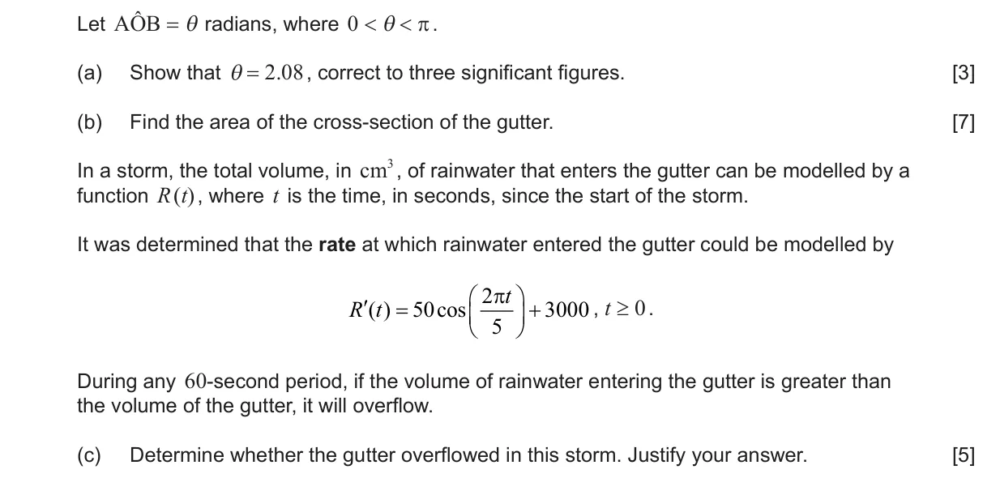
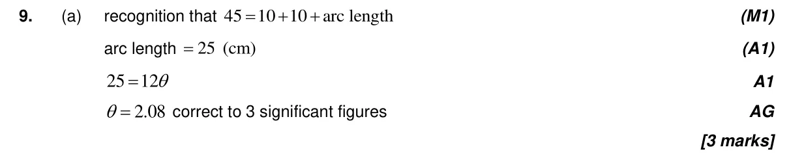
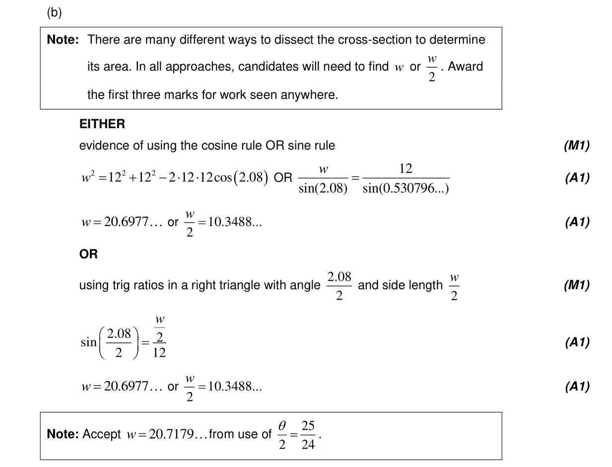
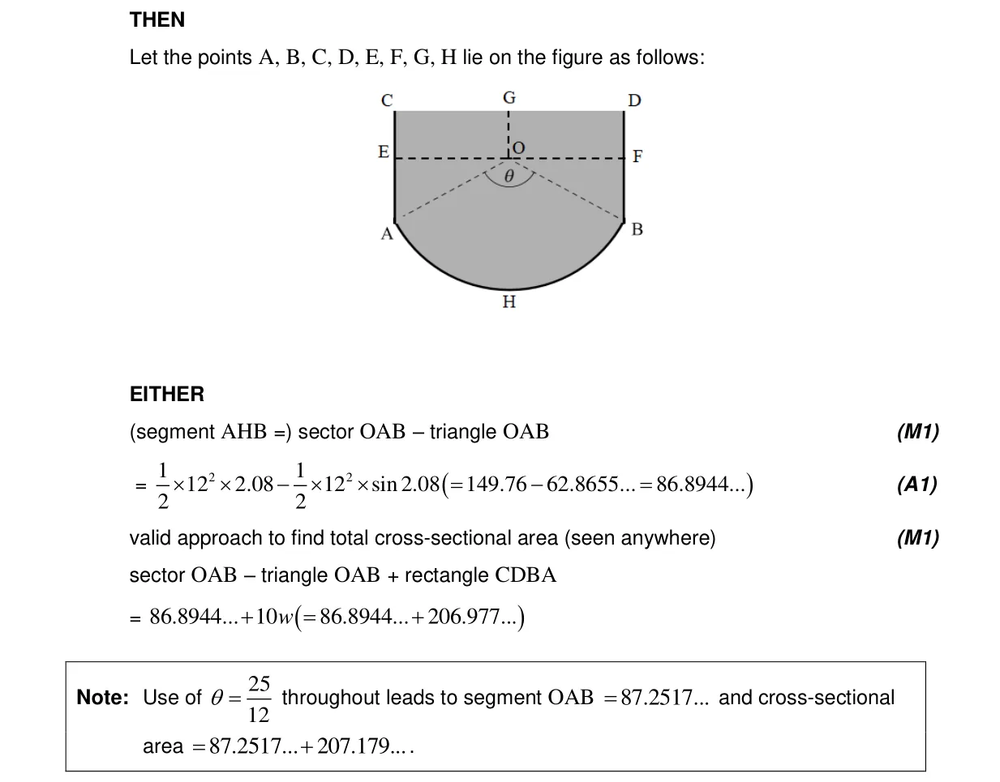
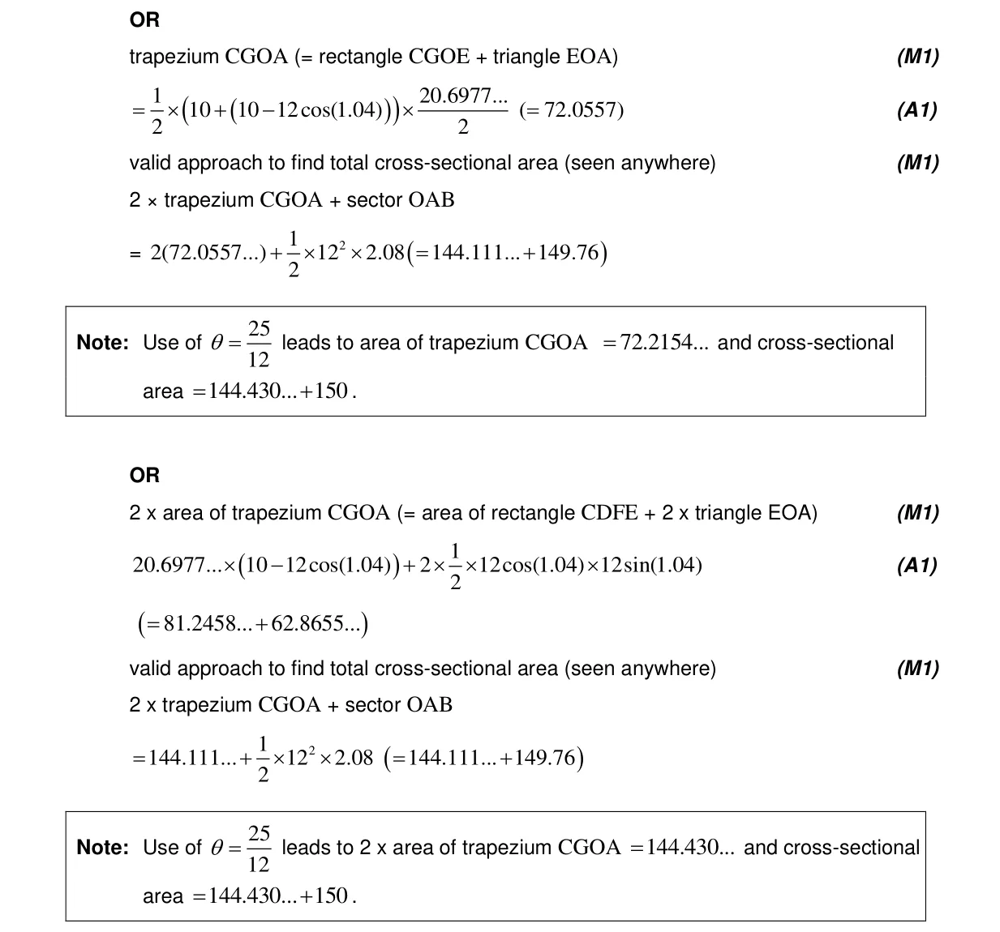
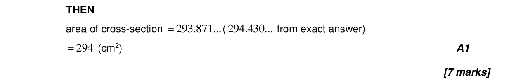
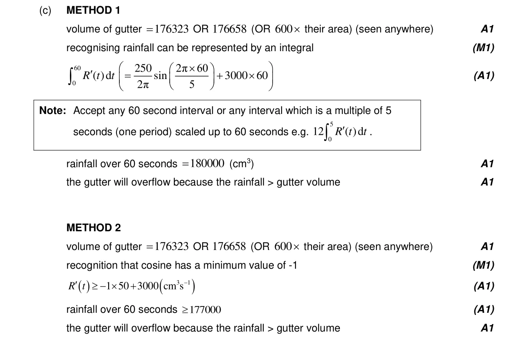
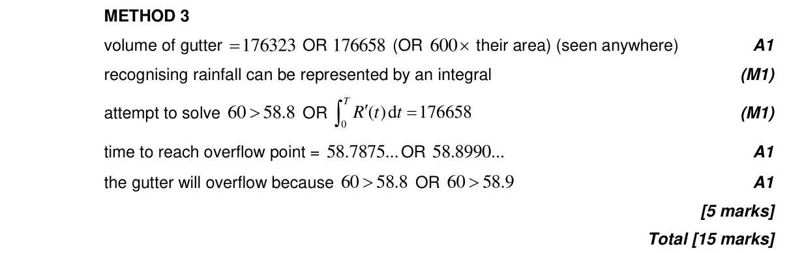

15 marks P2 TZ1 Section B Calculator Appears in AA SL P2 Q9AA HL P2 Q10 3.4 Circle: radians, arcs and sectors5.5 Integration introduction, areas between curve and x-axis3.2 2D and 3D trigonometry, sine rule, cosine rule and area Question Hide breakdown abc Markscheme 